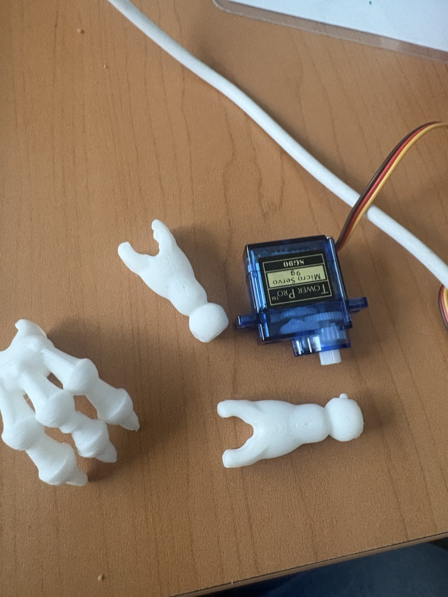
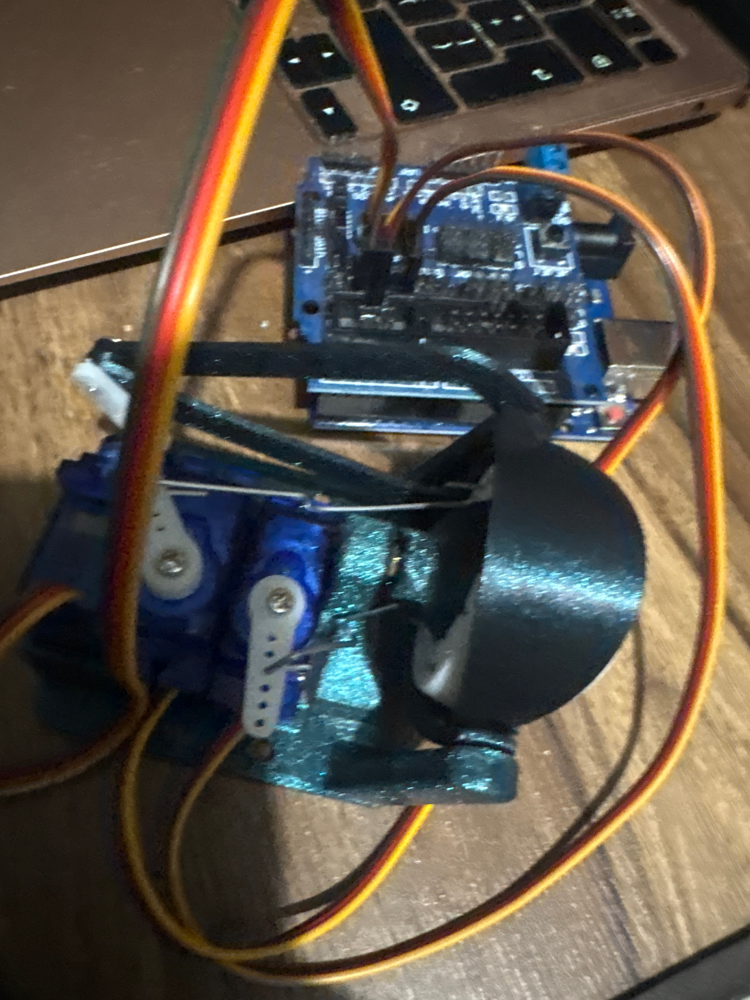

Guía de trabajo
Título de la práctica: Brazo dinosaurio
Modalidad: Individual o por equipos
Duración estimada: 4 a 6 sesiones
El código principal está preparado para servomotor. Si el brazo es pesado, largo o impreso en 3D, revisa la alternativa con motor paso a paso antes de fijar el montaje final.
Producto final identificado
Diseñar un brazo de dinosaurio que reaccione cuando un participante se acerca, combinando movimiento, luz y sonido para crear una señal de sorpresa o advertencia. En la mayoría de pruebas se usa un servomotor, pero si el brazo impreso en 3D pesa demasiado o el efecto palanca reduce la fuerza del servo, se puede optar por un motor paso a paso con driver ULN2003.
Prototipo de práctica antes del modelo final
El brazo que aparece en esta sección es un prototipo inicial. No se usará como versión final del proyecto: servirá para practicar armado, pintura, colocación del servo y pruebas de movimiento antes de ensamblar las piezas definitivas.
La intención es que el equipo pueda equivocarse aquí de forma controlada. Si el brazo queda pesado, se mueve poco, se atora o la pintura no queda uniforme, esa información se usa para mejorar el diseño final sin cambiar el propósito del proyecto.

El video se muestra sin sonido para usarlo como referencia visual de la prueba con un servo.
Qué deben practicar con este prototipo
- Ubicar el punto de giro y confirmar que el servo pueda mover el brazo sin forzarse.
- Probar ángulos de reposo y ataque con movimientos lentos y seguros.
- Ensayar refuerzos, unión de piezas, lijado y pintura antes de usar el modelo final.
- Detectar qué partes chocan, pesan demasiado o necesitan una base más firme.
Preguntas para documentar las pruebas
Contesta estas preguntas después de probar el brazo. Las respuestas deben ayudar a decidir qué se conserva, qué se cambia y qué se evita en el modelo final.
Evidencia mínima de esta etapa
- Foto del brazo antes de hacer ajustes.
- Video corto de una prueba de movimiento lento.
- Registro de los ángulos de reposo y ataque probados.
- Lista de al menos tres mejoras que se aplicarán al brazo final.
Importante: el prototipo es solo para práctica. La entrega final debe conservar el enfoque del proyecto: un brazo de dinosaurio estable, seguro y capaz de reaccionar con movimiento, luz y sonido cuando detecta proximidad.
Modelo final y elección del motor
La primera vertiente de esta práctica usa un servomotor porque es simple de programar y suficiente para brazos ligeros. Si el brazo está hecho de cartón, foamboard, madera balsa o madera muy ligera, normalmente no habrá problema siempre que el punto de giro esté bien colocado y el recorrido sea corto.
Si el brazo está impreso en 3D, pesa más o queda muy largo, puede aparecer el efecto palanca. El efecto palanca ocurre cuando una pieza larga multiplica el esfuerzo que debe hacer el motor: aunque el peso parezca pequeño, si está lejos del eje de giro exige más fuerza para levantarlo o moverlo. Por eso un servo pequeño puede vibrar, calentarse, trabarse o no completar el recorrido.
En ese caso se recomienda considerar un motor paso a paso 28BYJ-48 con driver ULN2003. No se mueve por ángulos directos como un servo; se mueve por pasos. Eso permite hacer recorridos cortos, repetibles y con más control, aunque requiere una librería y más cables.

El video final está convertido a MP4 y sin audio para que se reproduzca mejor en el navegador.
Regla de decisión
- Usa servomotor si el brazo es de cartón, foamboard o madera ligera y se mueve sin vibrar.
- Considera motor paso a paso si el brazo es impreso en 3D, largo, pesado o el servo pierde fuerza.
- Reduce el recorrido antes de cambiar de motor: a veces un movimiento corto produce mejor efecto y exige menos esfuerzo.
- Usa fuente externa de 5 V si el motor lo requiere; no alimentes motores exigentes solo desde el pin de 5 V del Arduino.
Objetivo 1: Investigar reacciones mecánicas seguras
Descripción: Analizar ejemplos de barreras, figuras animadas o mecanismos que pasan del reposo a una acción. Identificar qué hace que el movimiento sea visible sin ser peligroso.
Entrega: Lista de tres reglas de seguridad y dibujo de una reacción de reposo, ataque y regreso.
Evaluación: Las reglas consideran distancia del público, límites del movimiento y firmeza de la estructura.
Objetivo 2: Planear la activación por proximidad
Descripción: Elegir una zona de activación de hasta 25 cm y una zona de reinicio más lejana. Representar qué debe hacer el sistema antes, durante y después de detectar a una persona.
Entrega: Diagrama de flujo con reposo, detección, activación, regreso y reinicio.
Evaluación: El plan evita activaciones continuas y explica cuándo el brazo queda listo para reaccionar otra vez.
Objetivo 3: Diseñar el brazo y sus conexiones
Descripción: Revisar el diagrama eléctrico y diseñar una estructura ligera que el servo pueda mover. Si el brazo es impreso en 3D o el efecto palanca es alto, comparar la opción de motor paso a paso con driver ULN2003. Definir la ubicación del sensor, LED, buzzer, punto de giro y motor.
Entrega: Diagrama etiquetado y boceto lateral del brazo con medidas aproximadas, sentido de movimiento y motor elegido.
Evaluación: El diseño incluye todos los componentes, deja libre el recorrido y justifica si el brazo puede moverse con servo o si conviene motor paso a paso.
Objetivo 4: Probar sensor, señales y motor
Descripción: Comprobar por separado la lectura de distancia, el encendido del LED, el sonido del buzzer y el movimiento del motor. En servo, probar dos ángulos seguros. En paso a paso, probar un recorrido corto por pasos.
Entrega: Lista de verificación de los componentes y tabla con ángulos de servo o cantidad de pasos usados.
Evaluación: Los componentes funcionan de forma individual, la distancia se mide correctamente y el motor elegido no llega a sus límites físicos.
Objetivo 5: Construir la secuencia de movimiento
Descripción: Programar el avance del brazo, la pausa y el regreso al reposo. Agregar el LED y el sonido para que acompañen la reacción.
Entrega: Video de la secuencia activada manualmente y registro de los ángulos y tiempos usados.
Evaluación: El brazo completa la ida y el regreso, las señales se activan durante la reacción y el mecanismo conserva su estabilidad.
Objetivo 6: Integrar la detección automática
Descripción: Unir la lectura ultrasónica con la secuencia completa. Probar que el brazo se active una sola vez al entrar en la zona y se prepare de nuevo al alejarse.
Entrega: Tabla de pruebas con objeto lejos, objeto cerca, objeto que permanece cerca y objeto que vuelve a alejarse.
Evaluación: La reacción ocurre al cruzar el umbral, no se repite sin control y vuelve a estar disponible después del reinicio.
Objetivo 7: Mejorar seguridad y efecto
Descripción: Ajustar el umbral, los ángulos y la velocidad. Fijar cables y estructura, y comprobar que el participante pueda observar el efecto sin tocar la zona móvil.
Entrega: Lista de dos mejoras aplicadas y video de tres activaciones completas desde diferentes distancias.
Evaluación: El brazo se mueve con estabilidad, se detiene dentro del recorrido seguro y responde de manera consistente.
Materiales
- 1 Arduino Uno
- 1 sensor ultrasónico HC-SR04
- 1 servomotor SG90, MG90S o similar para brazo ligero
- Opcional: 1 motor paso a paso 28BYJ-48 con driver ULN2003 para brazo impreso en 3D o más pesado
- 1 LED rojo
- 1 resistencia de 220 ohms
- 1 buzzer pasivo
- Protoboard
- Cables Dupont
- 1 cable USB
- Fuente externa regulada de 5 V si el servo o motor paso a paso lo requiere
- Estructura mecánica del brazo
Descripción general
El brazo permanece en reposo mientras no detecta objetos cerca. Cuando el sensor identifica una distancia menor al umbral, el motor mueve el brazo, el LED enciende y el buzzer emite una alerta breve. La versión base usa servomotor; la versión alternativa usa motor paso a paso si el peso o el efecto palanca hacen que el servo no sea suficiente.
Explicación del funcionamiento
El sensor ultrasónico mide la distancia constantemente. Si un objeto entra en el rango definido, se llama a la función activarBrazo. En la versión con servo, esta función mueve el brazo entre dos ángulos, activa el LED y genera sonidos. En la versión con motor paso a paso, el movimiento se define por pasos de avance y regreso. Al terminar, el brazo vuelve a su posición inicial.
Espacio para diagrama
Consulta este diagrama como referencia para realizar tu montaje. Los estudiantes no deben subir archivos a esta sección.

Códigos de prueba para motores
Antes de conectar el sensor ultrasónico, el LED y el buzzer, prueba el movimiento del brazo solamente con el motor elegido. Estas pruebas ayudan a detectar si el mecanismo se atora, pesa demasiado, necesita otros ángulos o requiere cambiar de servo a motor paso a paso antes de usar el código completo.
Realiza estas pruebas con el brazo separado del montaje final o con movimientos lentos. Si el servo se calienta, vibra demasiado o no puede mover la pieza, detén la prueba y ajusta el mecanismo.
Prueba 1: Un servo
Usa este código cuando el brazo se moverá con un solo servomotor conectado al pin 9. Observa si sube y baja suavemente.
| Cable del servo | Arduino Uno |
|---|---|
| Naranja (señal) | Pin 9 |
| Rojo (VCC) | 5V |
| Café/Negro (GND) | GND |
#include <Servo.h>
Servo servo;
void setup() {
servo.attach(9); // Servo en el pin 9
servo.write(0);
delay(1000);
}
void loop() {
// Sube lentamente
for (int pos = 0; pos <= 180; pos++) {
servo.write(pos);
delay(8);
}
delay(800);
// Baja lentamente
for (int pos = 180; pos >= 0; pos--) {
servo.write(pos);
delay(8);
}
delay(800);
}Prueba 2: Dos servos
Usa este código si el brazo tendrá dos movimientos: hombro y muñeca. El servo del hombro va al pin 9 y el servo de la muñeca va al pin 10.
| Servo | Cable | Arduino Uno |
|---|---|---|
| Servo hombro | Naranja (señal) | Pin 9 |
| Servo hombro | Rojo (VCC) | 5V |
| Servo hombro | Café/Negro (GND) | GND |
| Servo muñeca | Naranja (señal) | Pin 10 |
| Servo muñeca | Rojo (VCC) | 5V |
| Servo muñeca | Café/Negro (GND) | GND |
#include <Servo.h>
Servo servoHombro;
Servo servoMuneca;
void setup() {
servoHombro.attach(9); // Servo del hombro
servoMuneca.attach(10); // Servo de la muñeca
servoHombro.write(0);
servoMuneca.write(0);
delay(1000);
}
void loop() {
// Sube el hombro
for (int pos = 0; pos <= 180; pos++) {
servoHombro.write(pos);
delay(8);
}
delay(250);
// Sube la muñeca
for (int pos = 0; pos <= 180; pos++) {
servoMuneca.write(pos);
delay(8);
}
delay(800);
// Baja el hombro
for (int pos = 180; pos >= 0; pos--) {
servoHombro.write(pos);
delay(8);
}
delay(250);
// Baja la muñeca
for (int pos = 180; pos >= 0; pos--) {
servoMuneca.write(pos);
delay(8);
}
delay(800);
}Alternativa: motor paso a paso 28BYJ-48 con ULN2003
Usa esta alternativa si el brazo impreso en 3D pesa demasiado, el servo vibra, se calienta o no logra vencer el efecto palanca. Este ejemplo usa un recorrido corto de 120 pasos para que el brazo solo se mueva una pequeña parte en horizontal y no dé vueltas completas.
Para usar este código instala la librería AccelStepper. Aunque el cableado físico va IN1-D8, IN2-D9, IN3-D10 e IN4-D11, en AccelStepper el orden 8, 10, 9, 11 suele funcionar mejor con el driver ULN2003.
| Driver ULN2003 | Arduino Uno |
|---|---|
| IN1 | D8 |
| IN2 | D9 |
| IN3 | D10 |
| IN4 | D11 |
| VCC | 5V externo recomendado |
| GND | GND común con Arduino |
#include <AccelStepper.h>
// Motor 28BYJ-48 con driver ULN2003
// Conexiones:
// IN1 -> D8
// IN2 -> D9
// IN3 -> D10
// IN4 -> D11
//
// En AccelStepper este orden suele funcionar mejor con ULN2003:
AccelStepper motor(AccelStepper::FULL4WIRE, 8, 10, 9, 11);
// Movimiento corto para brazo de dinosaurio
const int pasosRecorrido = 120;
void setup() {
Serial.begin(9600);
motor.setMaxSpeed(350.0);
motor.setAcceleration(120.0);
Serial.println("Prueba estable de motor paso a paso");
}
void loop() {
Serial.println("Avanza");
motor.moveTo(pasosRecorrido);
while (motor.distanceToGo() != 0) {
motor.run();
}
delay(700);
Serial.println("Regresa");
motor.moveTo(0);
while (motor.distanceToGo() != 0) {
motor.run();
}
delay(1000);
}Registro de la prueba
Código completo
#include <Servo.h>
// ===== BRAZO DINOSAURIO CON SENSOR =====
// -------- Pines --------
const int TRIG = 9;
const int ECHO = 10;
const int PIN_SERVO = 6;
const int LED_ALERTA = 4;
const int BUZZER = 8;
// -------- Configuración --------
const int DISTANCIA_ACTIVACION = 25;
const int ANGULO_REPOSO = 20;
const int ANGULO_ATAQUE = 110;
Servo brazo;
bool brazoActivado = false;
long medirDistancia() {
digitalWrite(TRIG, LOW);
delayMicroseconds(2);
digitalWrite(TRIG, HIGH);
delayMicroseconds(10);
digitalWrite(TRIG, LOW);
long duracion = pulseIn(ECHO, HIGH, 30000);
if (duracion == 0) {
return -1;
}
return duracion / 58;
}
void sonidoAlerta() {
tone(BUZZER, 900);
delay(90);
tone(BUZZER, 1300);
delay(90);
tone(BUZZER, 700);
delay(130);
noTone(BUZZER);
}
void activarBrazo() {
digitalWrite(LED_ALERTA, HIGH);
sonidoAlerta();
for (int angulo = ANGULO_REPOSO; angulo <= ANGULO_ATAQUE; angulo += 5) {
brazo.write(angulo);
delay(25);
}
delay(350);
for (int angulo = ANGULO_ATAQUE; angulo >= ANGULO_REPOSO; angulo -= 5) {
brazo.write(angulo);
delay(25);
}
digitalWrite(LED_ALERTA, LOW);
}
void setup() {
Serial.begin(9600);
pinMode(TRIG, OUTPUT);
pinMode(ECHO, INPUT);
pinMode(LED_ALERTA, OUTPUT);
pinMode(BUZZER, OUTPUT);
brazo.attach(PIN_SERVO);
brazo.write(ANGULO_REPOSO);
digitalWrite(LED_ALERTA, LOW);
noTone(BUZZER);
}
void loop() {
long distancia = medirDistancia();
Serial.print("Distancia: ");
Serial.print(distancia);
Serial.println(" cm");
if (distancia > 0 && distancia <= DISTANCIA_ACTIVACION && !brazoActivado) {
brazoActivado = true;
activarBrazo();
}
if (distancia == -1 || distancia > DISTANCIA_ACTIVACION + 10) {
brazoActivado = false;
}
delay(80);
}Producto final
Descripción: Brazo animado con sensor ultrasónico, LED y buzzer que reacciona al detectar proximidad y después regresa al reposo. Puede usar servomotor si el brazo es ligero, o motor paso a paso si el brazo impreso en 3D o el efecto palanca exigen más control del movimiento.
Entrega:
- Enlace de Drive con video del brazo armado y su activación por proximidad.
- Enlace de Tinkercad del circuito y código, si se realizó en simulador.
- Documento o texto en Drive con los ángulos usados para reposo y ataque, o los pasos usados si se eligió motor paso a paso.
- Explicación breve del motor elegido: servo para estructura ligera o paso a paso si el brazo impreso en 3D generó demasiado efecto palanca.
- Los enlaces deben permitir acceso a cualquier persona que los tenga.
Evaluación: El sensor activa el brazo en el rango definido, el motor ejecuta la reacción y regresa al reposo, el LED y el buzzer acompañan la acción y el montaje es estable. La elección del motor debe estar justificada por peso, material, longitud del brazo y efecto palanca.
Preguntas de reflexión
Enviar proyecto
Antes de enviar, verifica que los siete objetivos estén completos y que al menos un enlace de Tinkercad o Drive funcione sin solicitar permiso.
Inicia sesión con Google para habilitar el envío.